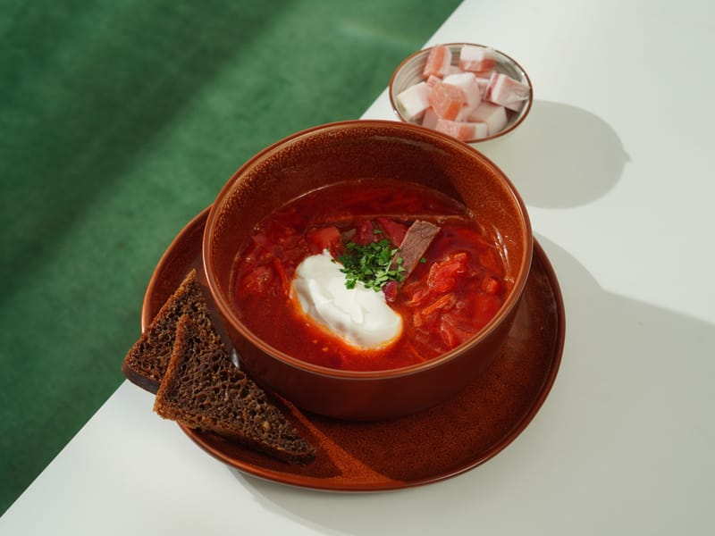

Український борщ
Наваристий червоний борщ на реберцях із буряком, капустою та квасолею. Подають зі сметаною і пампушками з часником.
- Категорія
- Перші страви
- Регіон
- Полтавщина
- Час приготування
- Складність
- Середня
- Базова кількість порцій
- 4
- Опубліковано

Інгредієнти
Інгредієнти розраховано на 4 порції.
- Свинина на кістці — 500 г
- Буряк — 300 г
- Картопля — 400 г
- Капуста білокачанна — 300 г
- Квасоля варена — 150 г
- Морква — 1 шт
- Цибуля — 1 шт
- Томатна паста — 2 ст. л.
- Олія соняшникова — 2 ст. л.
- Оцет 9 % — 1 ч. л.
- Часник — 3 зубчики
- Лавровий лист — 2 шт
- Вода — 2,5 л
- Сіль, чорний перець — за смаком
- Кріп — за смаком
Приготування
- Залийте м'ясо холодною водою, доведіть до кипіння, зніміть піну й варіть на слабкому вогні .
- Наріжте картоплю кубиками, капусту — тонкою соломкою; буряк і моркву натріть на тертці, цибулю дрібно поріжте.
- Обсмажте цибулю і моркву на олії , додайте буряк, томатну пасту й оцет і тушкуйте ще .
- Вийміть м'ясо, додайте в бульйон картоплю, через — капусту, і варіть до м'якості.
- Додайте засмажку, квасолю, лавровий лист і нарізане м'ясо, посоліть, поперчіть і варіть .
- Вимкніть вогонь, додайте подрібнений часник і кріп, накрийте кришкою й дайте настоятися .